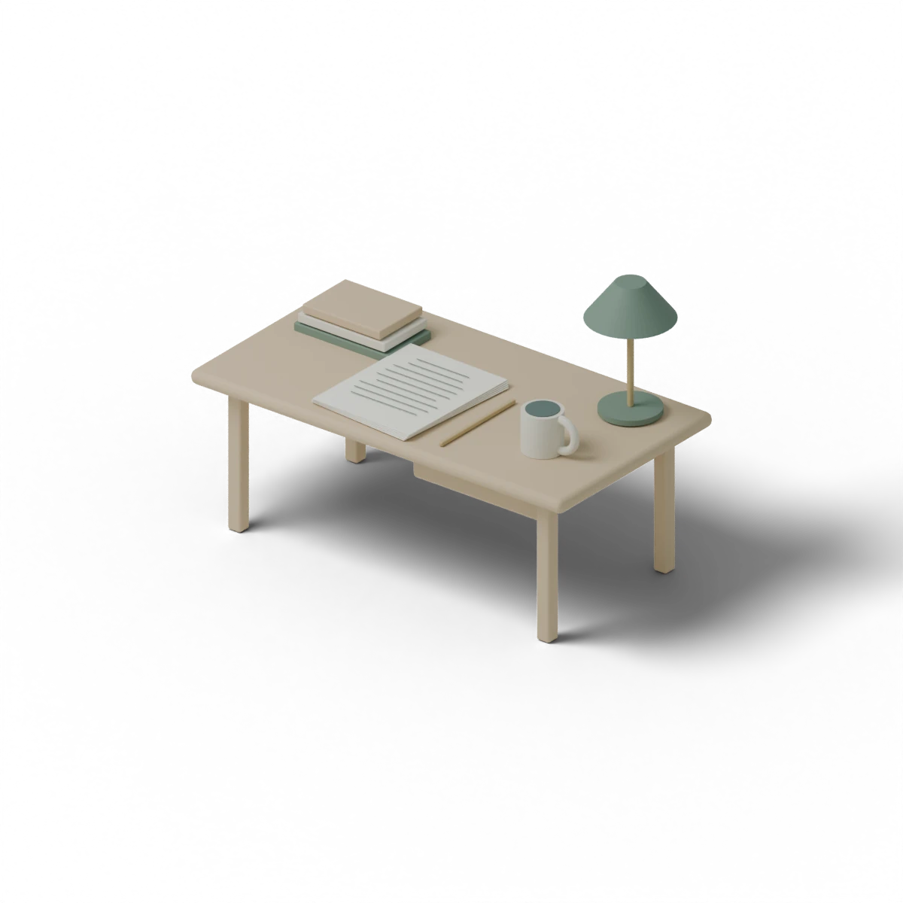

A note from the maker
Hi, I’m Rishit.
I’m building
Cabin.
Student, solo developer, and a writer still finding his sentences. Making a little room for all three.
Pull up a chair
Three threads, one practice
A work in progress.
Much like its maker.
01. Still learning.
Cabin is being shaped while I am still learning—through research, prototypes, wrong turns and the discipline of asking better questions before writing more code.
02. Building with care.
I design the interface, define the file model and build the product myself. One pair of hands keeps every decision close to the original reason Cabin exists: writing deserves a calmer place.
03. Finding the words.
I have not published anything major. I simply like writing—and I know how quickly a thought can disappear when the software around it becomes louder than the page.
The reason for the room
Good tools make space
for the person using them.
I am building the writing room I always wanted to enter: quiet at first, capable when needed, and honest about whose words matter.